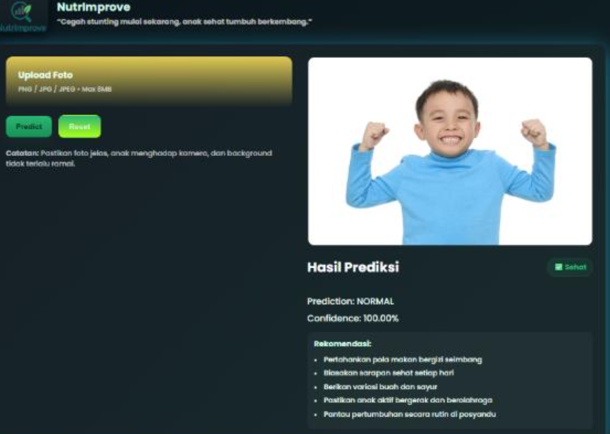
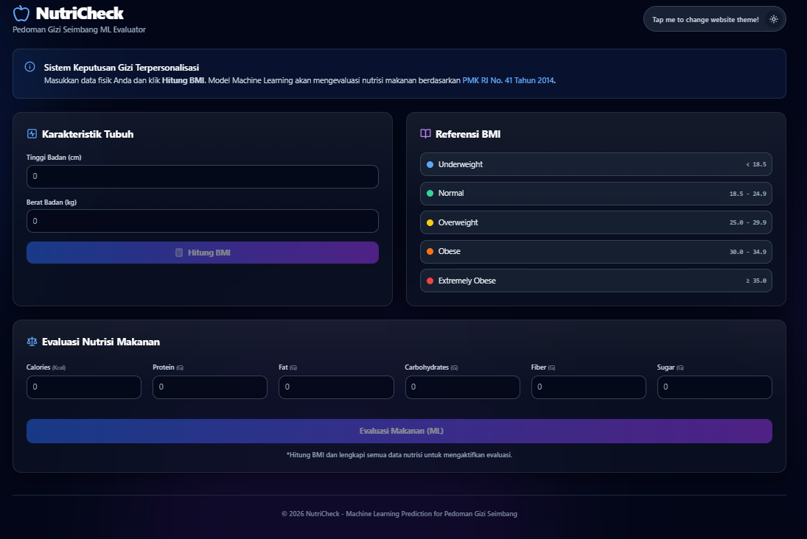
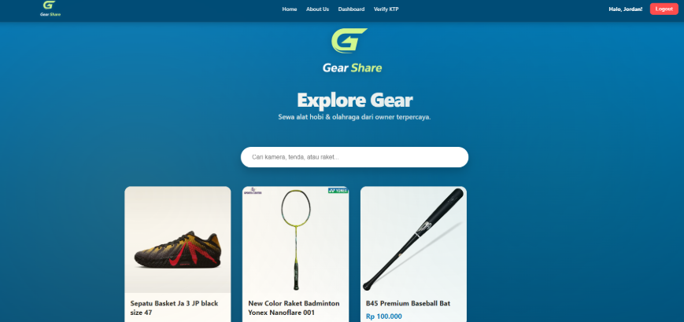
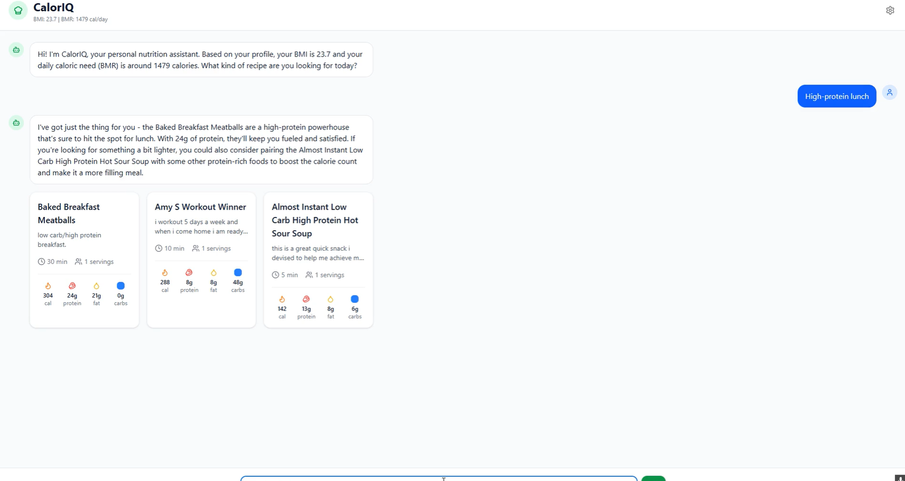

cryPIto
Mar 2025 – Jun 2025
cryPIto is a concept and front-end prototype for a premium cryptocurrency trading platform, designed in Figma and coded with HTML5, CSS, and JavaScript as a final lab project for the Human and Computer Interaction (HCI) course. It includes Home, Cryptocurrencies, Learn, Benefits, and Register pages in a responsive layout, emphasizing clear information hierarchy, intuitive navigation, and a trustworthy, luxury trading experience.
View on GitHub

NutrImprove
Sep 2025 – Dec 2025
NutrImprove is an AI-based website created as a final project for the Artificial Intelligence (AI) course. It uses a Convolutional Neural Network (CNN) model that was designed, trained, and implemented from scratch to analyze images to detect malnutrition and predict stunting, providing recommendations based on the child's condition.
View on GitHub

NutriCheck
Feb 2026 – Jun 2026
NutriCheck is a Machine Learning based web application developed as a final project for the Machine Learning course. It integrates machine learning models to classify food as Healthy or Unhealthy based on nutritional features (calories, protein, fat, carbs, fiber, sugar). Incorporating personal info like height and weight to calculate BMI and daily calorie requirements, the best model (Random Forest Classifier) achieved over 99% accuracy, precision, recall, and F1 score.
View on GitHub

GearShare
Feb 2026 – Jun 2026
GearShare is a full stack web application developed as a final project for the Software Engineering course, connecting sports equipment owners with renters. Built using React.js, Node.js, Express.js, and MongoDB, featuring location-based search, booking management, verification, real-time chat, and a review system.
View on GitHub

CalorIQ
Feb 2026 – Jun 2026
CalorIQ is an NLP-based web application developed as a final project for the Natural Language Processing course. It combines Sentence BERT semantic search, rule-based entity extraction, nutritional filtering, and an LLM to deliver personalized recipe recommendations based on user BMI, BMR, and daily calorie targets, achieving an average Composite Score of 0.6822 and NDCG@5 of 1.0000.
View on GitHub

Asphalt Intelligence
Feb 2026 – Jun 2026
Asphalt Intelligence is a Computer Vision based web application developed as a final project for the Computer Vision course. It utilizes a YOLOv8 object detection model to automatically detect potholes from road images, calculating the Road Health Index (RHI) and Maintenance Priority Score (MPS) to support predictive road maintenance (achieving 77.75% mAP50).
View on GitHub